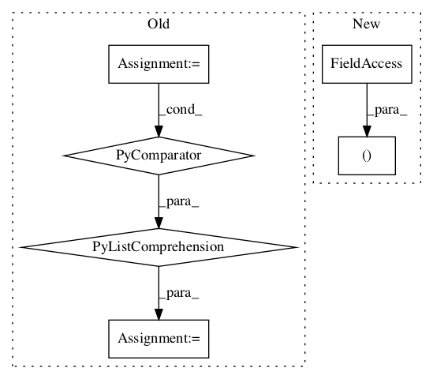

b71152eea0470ac2629c33e0fc66a54fe494949f,baselines/common/vec_env/dummy_vec_env.py,DummyVecEnv,step_wait,#DummyVecEnv#,15
Before Change
self.actions = actions
def step_wait(self):
results = [env.step(a) for (a,env) in zip(self.actions, self.envs)]
obs, rews, dones, infos = map(np.array, zip(*results))
self.ts += 1
for (i, done) in enumerate(dones):
if done:
obs[i] = self.envs[i].reset()After Change
def step_wait(self):
for i in range(self.num_envs):
obs_tuple, self.buf_rews[i], self.buf_dones[i], self.buf_infos[i] = self.envs[i].step(self.actions[i])
if isinstance(obs_tuple, (tuple, list) ):
for t,x in enumerate(obs_tuple):
self.buf_obs[t][i] = x
else:In pattern: SUPERPATTERN
Frequency: 4
Non-data size: 6
Instances Project Name: openai/baselines
Commit Name: b71152eea0470ac2629c33e0fc66a54fe494949f
Time:
Author: null
File Name: baselines/common/vec_env/dummy_vec_env.py
Class Name: DummyVecEnv
Method Name: step_wait
Project Name: openai/baselines
Commit Name: b71152eea0470ac2629c33e0fc66a54fe494949f
Time:
Author: null
File Name: baselines/common/vec_env/dummy_vec_env.py
Class Name: DummyVecEnv
Method Name: reset
Project Name: deepmipt/DeepPavlov
Commit Name: 387bb02bb54d6bec3b3618e62a97aa8618acca8c
Time:
Author: null
File Name: deeppavlov/models/ranking/siamese_model.py
Class Name: SiameseModel
Method Name: __call__
Project Name: khaotik/DaNet-Tensorflow
Commit Name: de00082780be884fc90e0113d323bfd63006ffba
Time:
Author: null
File Name: main.py
Class Name: Model
Method Name: train